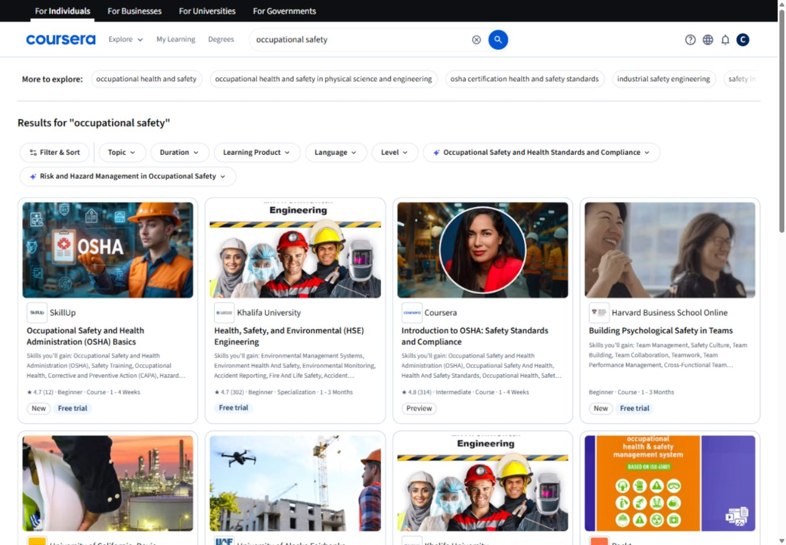

One column, 16px gutters. Wrap applied filters. Keep status and restrictions visible.
Coursera benchmark → HSE Informer
A clear interface for
consequential learning.
A component and styling reference grounded in Coursera’s live experience, translated for HSE training, qualification, and evidence.
The design decision
Adopt the clear hierarchy, prominent search, consistent cards, and visible source attribution. Add explicit qualification stages, readable operational metadata, and dependable recovery states.

Familiar patterns.
Precise meaning.
01
Make the next action obvious
Search, discover, learn, then verify the next required step.
02
Show the basis for trust
Provider, applicability, content version, reviewer, and evidence.
03
Keep completion and authorization distinct
Knowledge can be complete while practical evaluation remains pending.
Scope: signed-in discovery, course detail, navigation, filters, and an empty learning workspace. Anonymous and peer pages received a public content review. Dark mode, checkout, authenticated course playback, and full assistive-technology testing were not exercised. This is a design reference, not a conformance certification or production LMS.
02 / Foundations
Color, type, space.
M · MeasuredR · Recommended for HSEU · Not verified
The names below are descriptive audit labels. HSE tokens are versioned recommendations; Coursera’s internal token names were not extracted.
Core palette M
Semantic colors R
Information
#0048B1 / #F0F6FFSuccess
#166534 / #ECFDF3Warning
#854D0E / #FFF8E6Danger
#B42318 / #FFF1F0Every status needs text. These HSE semantic pairs all exceed 4.5:1 in the supplied contrast calculation.
Contrast is a usage rule
6.44:1
White text on action blue#FFFFFF on #0056D2
Coursera’s pale borders are useful for grouping. HSE inputs use a stronger #687994 boundary, measured at 4.42:1 on white.
Typography
Source Sans 3
Proposed HSE font, bundled locally.
Coursera was measured using Source Sans Pro.
400 body · 600 headings and actions · 700 emphasis
16px root · rem units · 68ch maximum prose
Display · 44 / 52
Build safer capability.
Page title · 32 / 40
Your learning, in context
Section · 24 / 32
Required qualifications
Body · 16 / 24
Complete the site addendum before requesting a practical evaluation.
Metadata · 14 / 20
Version 2.1 · 20 minutes · Site instruction required
Spacing R
4px base · 16px card padding · 24px groups · 32–48px sections
Shape and elevation
8px
Controls · M
Controls · M
16px
Cards · M
Cards · M
Raised
Overlay · R
Overlay · R
Flat surfaces are the default. Elevation describes a floating layer or meaningful interaction, not every container.
Responsive composition R
Two columns where cards fit. 24px gutters. Move supporting rails below or into drawers.
Allow main plus rail when main retains 600px. Otherwise stack by content fit.
Up to four catalog columns, 1280px max content. Reading text remains at 68ch.
03 / Components
Consistent actions. Visible states.
Interact with these local examples. Demo changes remain in this page and do not create learner or compliance records.
Buttons
44px default / 48px coarse pointerDefaultHover #0048B1Active #003C94Keyboard focus · 3pxDisabled · native state
Use an anchor to navigate and a button to change state. A destructive action must identify the person, scope, and consequence before confirmation.
Form field and validation
C15Choice controls
C16Status is an explicit statement
C17 / P01Not assessedIn progress✓ Knowledge CompletePractical evaluation pendingNot authorized
Access, progress, qualification, and validity are different dimensions. The green knowledge milestone never overrides a pending practical evaluation.
Site instruction is part of this path
Review the local addendum before requesting evaluation.
Authorization is pending
Your knowledge assessment is complete. A practical evaluation is still required.
Accordion
C14Site-specific instructionRequired prerequisite · View details
Include the local procedures, equipment, and contacts identified by the qualification plan.
A critical prerequisite remains named even when the details are collapsed. Preview and Start actions belong beside the trigger, not inside it.
Evidence and version historySupporting information
Retain the course version and site addendum used for the assignment. Historical records continue to reference those versions.
04 / HSE patterns
From discovery to evidence.
These examples combine the measured visual language with the training and qualification requirements in your product vision. All content and records below are fictional design specimens.
HSE Informer Learning catalogExample workspace
Find the right learning.
Explore instruction by topic. Applicability is determined by the employer’s qualification plan.
No courses match this search
Try another topic or clear the current search and filters.
Example qualification record
Powered industrial truck operator
Warehouse A · Truck type: counterbalance · Example version 2.1
2 of 4 example prerequisites recorded50%
- Knowledge CompleteComplete
Assessment result retained with course version 2.1.
- Site Training CompleteComplete
Warehouse traffic plan reviewed, addendum version 1.3.
- Practical EvaluationPending
An assigned evaluator must record the workplace evaluation.
- Employer authorizationBlocked
Available only after all applicable prerequisites are verified.
This example shows one conditional path. External Credential Verified is a separate supported milestone and is not mandatory for every qualification.
- Record
- DEMO-0042
- Course version
- 2.1
- Site addendum
- 1.3
- Authorization
- Not authorized
- Knowledge assessment recorded
Example record · September 4, 2026 · 09:10 EDT
- Site addendum reviewed
Example record · September 5, 2026 · 14:35 EDT
- Practical evaluation pending
Awaiting the assigned evaluator. No authorization event recorded.
Evaluator record table
C22 / C26A table supports comparing records. On narrow screens, only this labelled region scrolls.
| Learning requirement | Version | Knowledge | Authorization | Evidence |
|---|---|---|---|---|
| PIT operator · Warehouse A | 2.1 | Complete | Evaluation pending | |
| Task-specific PPE · Mixing area | 1.4 | In progress | Not assessed | Awaiting evidence |
No assignments yet
Your supervisor has not assigned learning for this workspace.
Browse example coursesEvidence could not be uploaded
Your evaluation draft is saved. Try the upload again.
05 / Component contracts
The implementation checklist.
Every component specifies anatomy, states, behavior, accessibility, and source coverage. Extensions for evidence and qualification are explicitly labelled.
32 component contracts
No component contracts match that search.
06 / Audit findings
What to retain. What to improve.
Search stays in context
Queries persist into the result field and URL. Filters expose a selection count and state.
E04 · Catalog ↗Cards adapt to mobile
Four desktop columns become two on tablet and compact thumbnail rows on mobile.
E07 · Mobile ↗
Close every layer cleanly
One filter dismissal left the main root hidden from accessibility with focus on BODY. Later retests passed. Test asynchronous close paths explicitly.
First observation ↗ · Retest ↗Increase useful metadata
Coursera card metadata measured 12/18px. HSE uses 14/20px and keeps scope and restrictions fully visible.
Measurements ↗Explain substituted results
A single unmatched query still produced broad courses. HSE should distinguish exact results from suggestions and provide clear recovery.
E16 · Search probe ↗
Keep help under user control
The assistant rail was expanded on course arrival in this session. HSE assistance starts collapsed with an explicit restore control.
E12a · Assistant rail ↗
Required before production release
- Keyboard and screen-reader task completion; modal focus cleanup.
- 320px reflow, 200% zoom, real mobile touch and readable long labels.
- Actual rendered contrast; text and icons for status, not color alone.
- Loading, empty, offline, denied, validation, retry and conflict states.
- Versioned evidence and server-confirmed qualification transitions.
- Representative workers can distinguish knowledge completion from authorization.
WCAG 2.2 AA target-size minimum is 24px or an applicable exception. HSE’s 44px / 48px policy is a stronger design choice. Prototype checks do not certify the final app.
Read package validation ↗07 / Evidence & sources
A traceable design reference.
Open a capture for its full detail. Source appearances are a point-in-time sample and may differ by account, region, or experiment.
Market and standards basis
Coursera
Primary live UI benchmark; public acquisition structure.
edX · FutureLearn
Limited public structure comparison: topics, provider identity, program types, outcomes.
USWDS Search · Cards · Tables
Published component usage guidance.
WCAG 2.2 · WAI Dialog · WAI Tabs
Accessibility requirements and interaction patterns.
This guide follows HSE Informer’s existing product vision. Its domain requirements are treated as a product brief, not independently validated legal advice. Coursera artwork remains attributed research evidence and must not be reused as HSE production assets. No user study or market performance uplift is claimed.